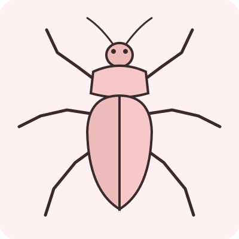
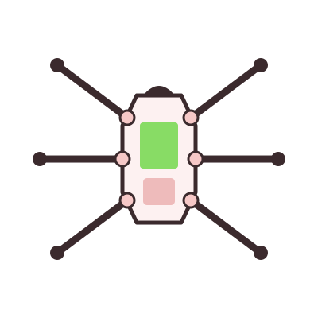
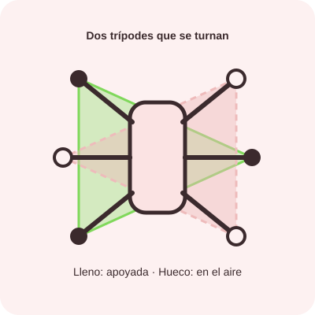
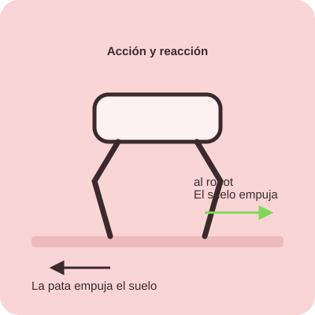

Un robot de seis patas que aprendió a caminar de los insectos. Aquí te contamos cómo funciona.
Todos los insectos tienen seis patas y casi todos caminan igual: mueven tres patas mientras las otras tres los sostienen. Ese patrón es la base de nuestro robot.


El robot usa la marcha en trípode, igual que los insectos:
Giro sobre su propio eje: si las patas de un lado van hacia adelante y las del otro hacia atrás, el robot gira en su lugar.

Presiona el botón para verlo caminar

Las tres patas apoyadas forman un triángulo. Mientras el centro del robot quede dentro de ese triángulo, el robot no se cae. Por eso un hexápodo es tan estable, incluso en terrenos difíciles.
El robot es una forma práctica de ver los conceptos que estudiamos en clase.

ΣF = 0
Si nada lo empuja, el robot se queda quieto. Necesita que sus patas empujen para empezar a moverse.
F = m · a
Mientras más pesa, más fuerza necesita para moverse. Por eso cuidamos el peso de cada pieza.
Acción = Reacción
La pata empuja el suelo hacia atrás y el suelo empuja al robot hacia adelante. Así avanza.
f = μ · N
Sin fricción las patas resbalarían. El agarre con el suelo es lo que permite empujar.
τ = F · r
Es la fuerza que hace girar cada motor. Una pata más larga necesita más torque.
Equilibrio
El centro del robot debe quedar dentro del triángulo que forman las patas apoyadas.
Lo que nuestro proyecto aporta más allá del robot.
| Área de impacto | Impacto del proyecto |
|---|---|
| Educación | Permite aplicar conocimientos de robótica, física, programación, electrónica y mecánica de una manera práctica. |
| Innovación tecnológica | Promueve la creación de nuevas ideas y el desarrollo de soluciones mediante la tecnología. |
| Cultura científica | Despierta el interés por la ciencia y demuestra cómo los conocimientos científicos pueden aplicarse a proyectos reales. |
| Trabajo colaborativo | Fortalece la comunicación, organización y cooperación entre los estudiantes. |
| Medioambiente | Sirve como modelo para estudiar formas de desplazamiento que pueden utilizarse en terrenos donde otros tipos de robots presentan dificultades. |
| Sociedad | Motiva a los jóvenes a interesarse por la tecnología y a desarrollar habilidades que pueden contribuir a futuras soluciones para la comunidad. |
| Desarrollo de habilidades | Fortalece el pensamiento crítico, la resolución de problemas, la creatividad y la capacidad de trabajar en equipo. |
"Creemos que la tecnología no solo consiste en construir máquinas, sino en aprender, crear y encontrar nuevas formas de transformar nuestro entorno."Conoce al equipo